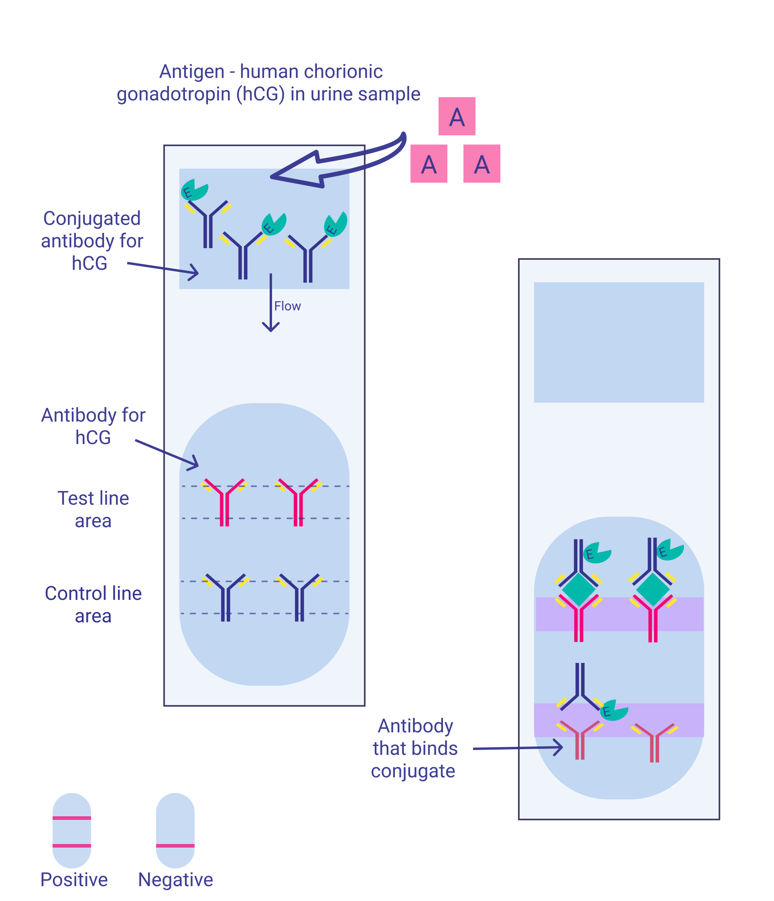
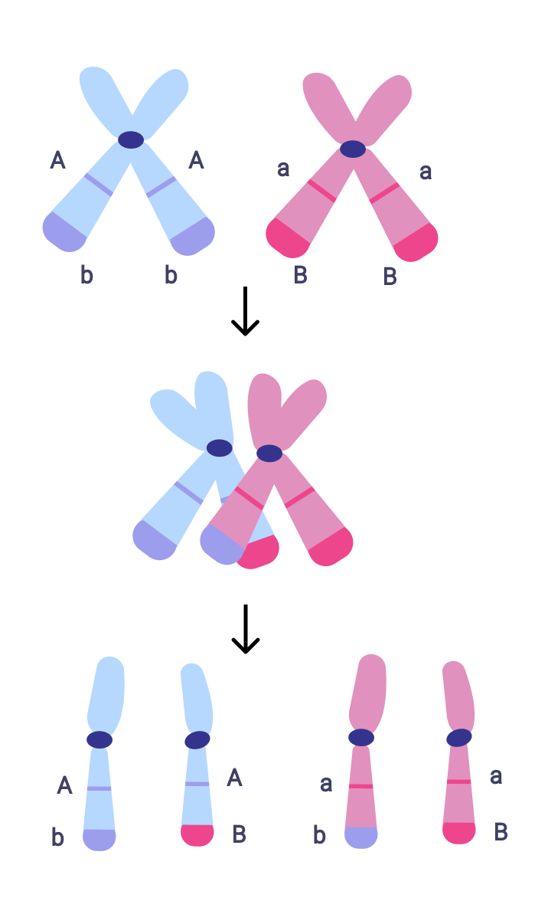
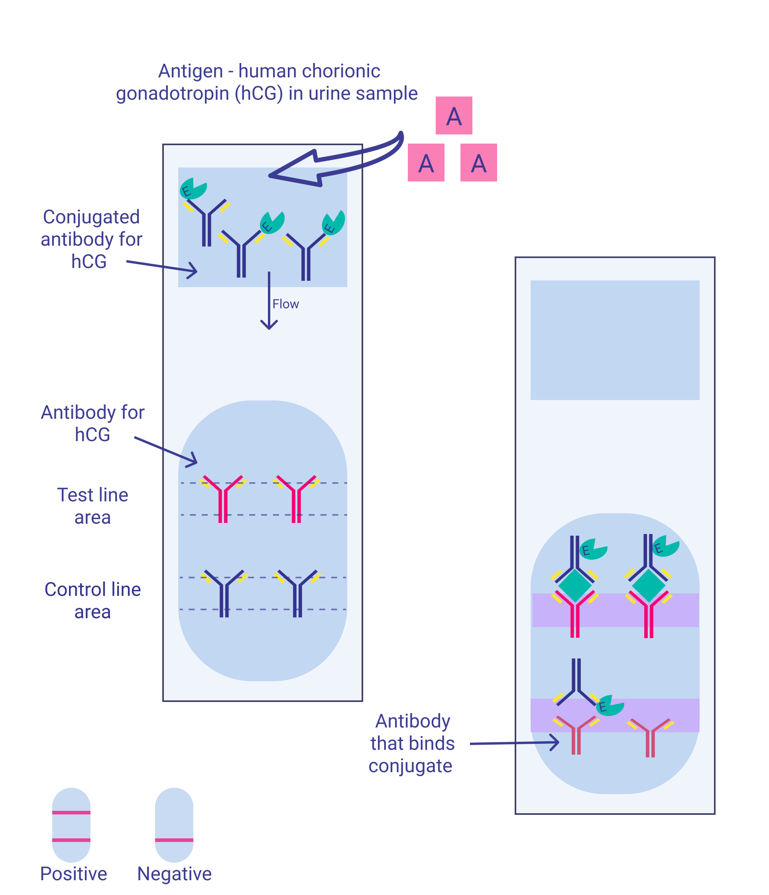
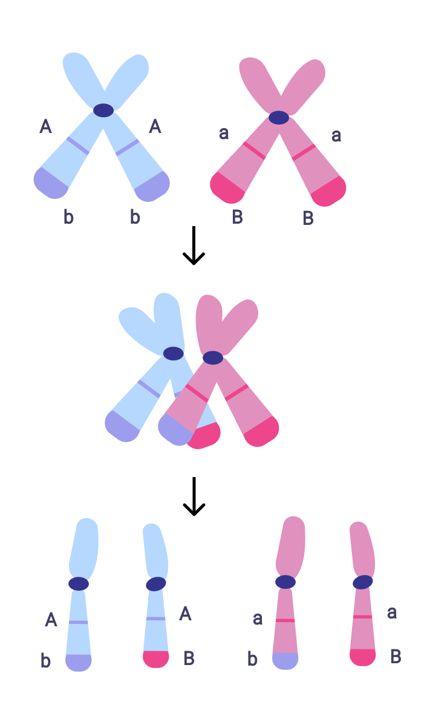
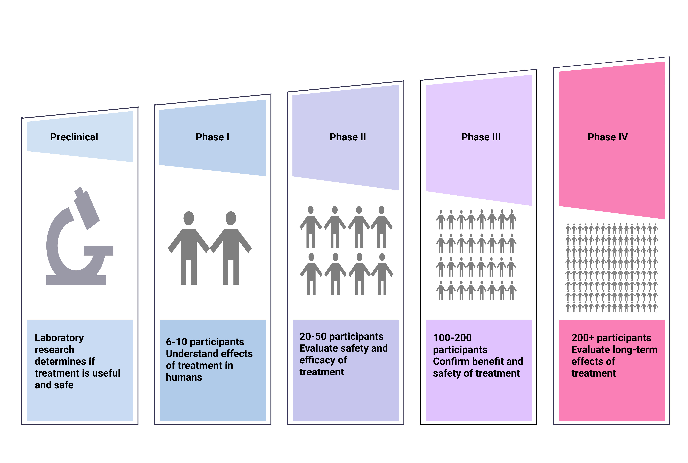
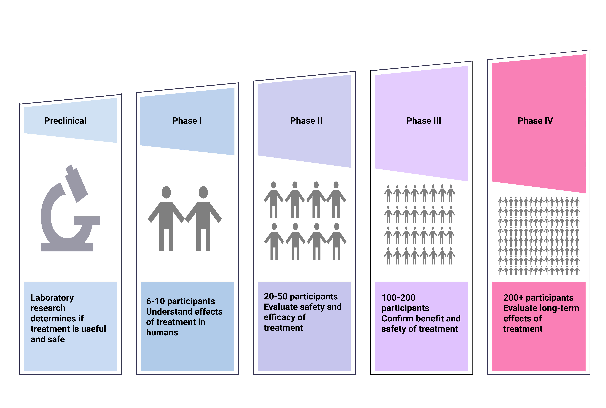

My full portfolio
Science Journalistic
2024
• Toxoplasma of courage, cordyceps of sex, wheat of expulsion. How plants, fungi and bacteria manipulate other organisms (Medium, English)
• Love, Death, and Cortisol: How and Why Animals Die After Mating (Medium, English)
• The Non-Standard Genome, the Artificial Genome. How the Genetic Code of Viruses, Bacteria, and Mitochondria Functions (Knife.media, Russian)
• Owls, Larks, and Pigeons: What Are Circadian Rhythms and Why Are They Different for Us? (Knife.media, Russian)
• Tired lemurs are sleeping... What is animal hibernation and how is it different from anabiosis and hibernation (Knife.media, Russian)
• Toxoplasma and Business Bubbles, Tambora and Cholera: How Epidemics Change Human History (Knife.media, Russian)
• Strangler ficuses and "rotten" flowers. What types of parasitic plants are there? (Knife.media, Russian)
• How did blood evolve and why is it the way it is? (MirF, Russian)
• The Kingdom of Fungi: Nature's Supercomputers, Clever Parasites, and Zombie Creators (MirF, Russian)
• Real Vampires: How Science Explains the Myth of the Children of the Night (MirF, Russian)
• Where living things get their energy: tenacious bacteria, precious oxygen and lots of carbohydrates (MirF, Russian)
• Little Helpers: How Nanorobots Are Used in Medicine (MirF, Russian)
• How Homo sapiens has changed from the Darwin time (Medium, English)
• How did blood evolve and why is it the way it is? (MirF, Russian)
2023
• When a cell is not a cell (Medium, English)
• The Challenges of Science Journalism (Medium, English)
• Love, Death, and Cortisol: How and Why Animals Die After Mating (Knife.media, Russian)
• From Oxygen to Vanadium: What We Know About the Biological Role of Chemical Elements (Knife.media, Russian)
• Escaped genes or simplified parasites? Where Do Viruses Come From? (Knife.media, Russian)
• Blackened Butterflies, Invulnerable Bacteria: Evolution Today and How to “See” It (Knife.media, Russian)
• Friendship between people and bacteria, woodpeckers and fungi, algae and mollusks. What is symbiosis and why is it the basis of life on Earth (Knife.media, Russian)
• This Unstable RNA World: What Are Ribonucleic Acids and Why Could They Have Begun Life on Earth?(Knife.media, Russian)
• Toxoplasma of courage, cordyceps of sex, wheat of expulsion. How plants, fungi and bacteria manipulate other organisms (Knife.media, Russian)
• Altruism and Skin Coloration: How Mathematics Helps Biologists — and Vice Versa (Knife.media, Russian)
• Fish dances, cat dialects. How plants, insects and other living organisms perceive the world around them and communicate with each other (Knife.media, Russian)
• What is a blood type - and why are there actually more than forty of them, not four? (Knife.media, Russian)
• Red melanins, blue anthocyanins. How living things get their color and why it's not necessarily about pigments (Knife.media, Russian)
• Homologues and Analogues. Why Similar Organs of Living Beings Often Have Different Origins, and Dissimilar Organs Have the Same Origins (Knife.media, Russian)
2022
• Antibiotic Plants and Medical Grapes. Biologist Alexandra Dubrovina about RNA interference and the prospects of modern biotechnology (Knife.media, Russian)
• Unity of Blood and Leaves. What are Porphyrins and Why Can Humans and Corn Get Similar Diseases? (Knife.media, Russian)
• The Mysterious Lucky Ticket: Why 1 in 50,000 People with a Deadly Genetic Disease Might Just... Not Notice It (Knife.media, Russian)
• From walking proteins to DNA nanorobots. How substances are transferred inside a cell and how knowledge about this can help medicine (Knife.media, Russian)
• Eating someone else's brain and turning your own into a sponge: the story of the discovery and study of prions - mysterious proteins that sometimes become killers (Knife.media, Russian)
• Artificial uterus, male pregnancy and the IVF. 5 important reproductive technologies of the present and future (Knife.media, Russian)
• Immortal Worms and Ageless Turtles: How Animals Almost Conquer Death and Why They Have to Get Rid of Their Gender (Knife.media, Russian)
• Abortions do not cause cancer, do not cause infertility, and the fetus does not feel pain. Debunking myths about abortions (Knife.media, Russian)
2021
• Better not to drink. What happens when drugs meet alcohol (N+1, Russian)
• Invented languages in games: a real necessity or aimless creativity? (Skillbox, Russian)
• The Benefits of Games: What Role Does Science Play in Game Development (Skillbox, Russian)
• Indonesian Hobbits, Toxoplasma Zombies, and Porphyria-Infected Vampires: 5 Fantasy Creatures That Aren't So Fantasy (Knife.media, Russian)
• Coma vs. Rabies: What is the Milwaukee Protocol, How it Saves the Terminally Ill, and Why it's So Expensive (Knife.media, Russian)
• Let Me Work! How Geneticist Barbara McClintock Went From Crazy Outcast To Nobel Laureate (Knife.media, Russian)
• The tragedy of perfluorane: how artificial blood was created in the USSR and why its inventor committed suicide (Knife.media, Russian)
• Sea Voyages of the Erectus and the People of the Cave of the Rising Star: How Homo Sapiens Interbred with Other Hominids (Knife.media, Russian)
• Diamonds are only for men. How the discoverer of Yakut diamonds Larisa Popugaeva was deprived of her rights to the discovery and scientific career (Knife.media, Russian)
• Artificial Heart of a Two-Headed Dog: How Vladimir Demikhov Created Transplantology in a Damp Basement Using a Vacuum Cleaner (Knife.media, Russian)
2020
• How Homo sapiens has changed from the Darwin time (Skillbox, Russian)
Science Design
Infographics

Illustrative materials


 



 
